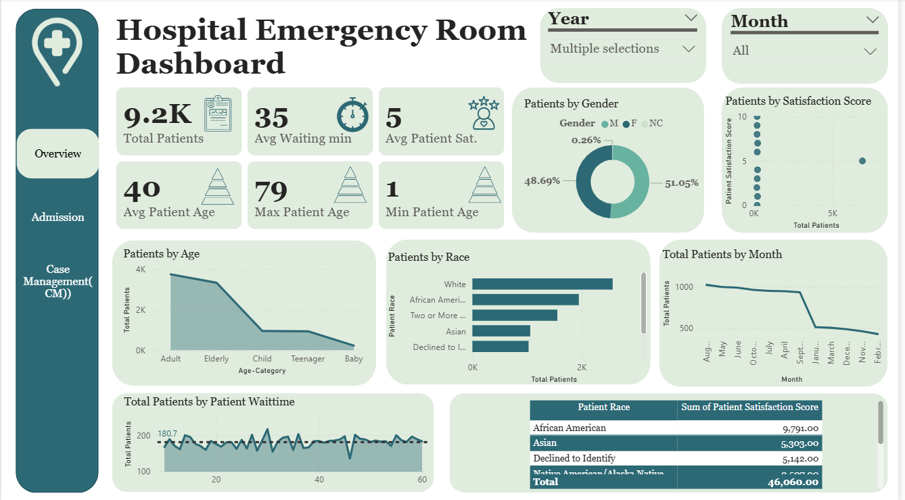
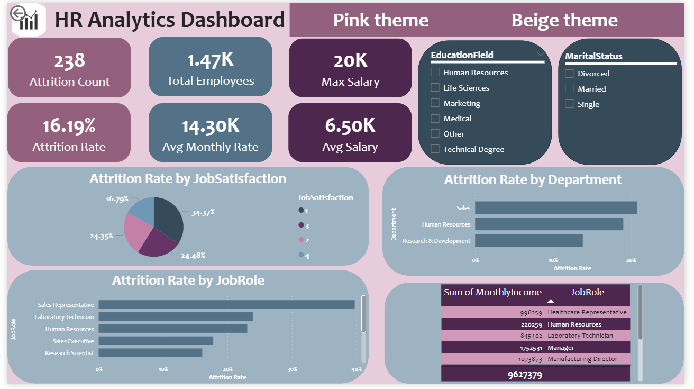
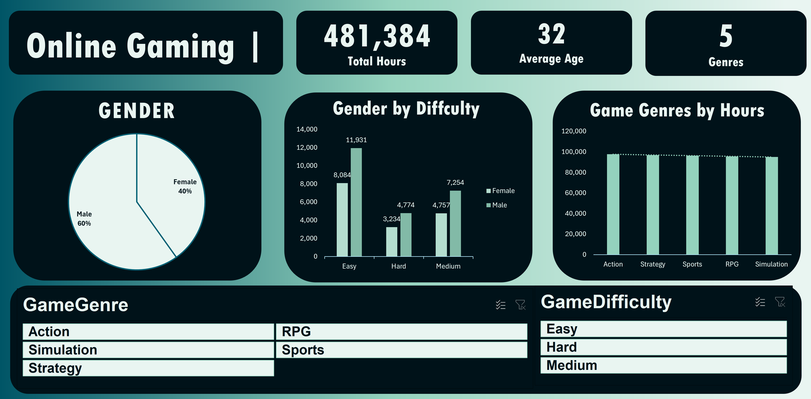
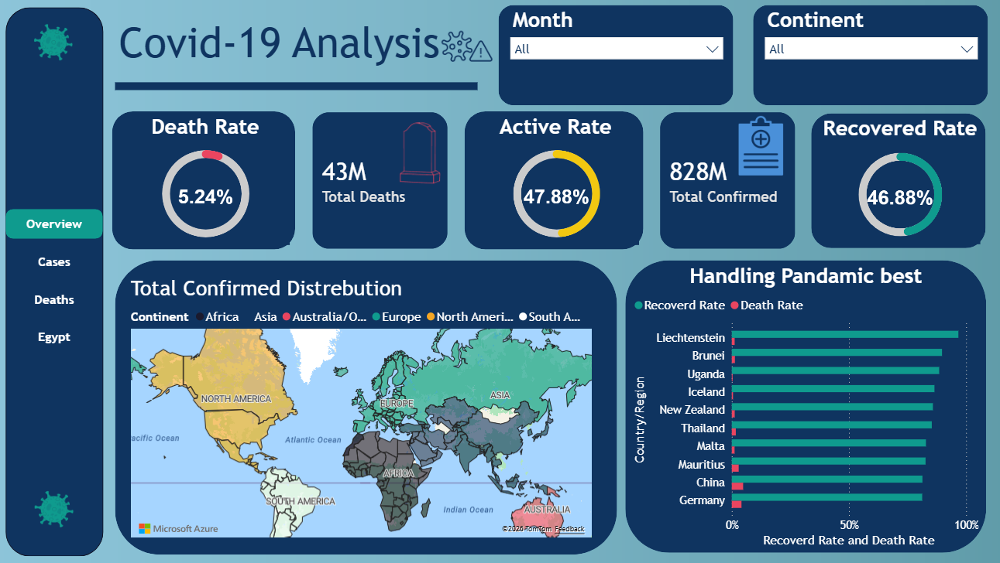

I'm Fatma — a junior data analyst and AI Engineering student at Kafr El-Sheikh University. I build dashboards and data stories that help organizations make faster, better-informed decisions.
I'm an AI Engineering student (class of 2030, GPA 4.00) at Kafr El-Sheikh University with a strong focus on data analytics and business intelligence. I work across the full analytics pipeline — from raw data cleaning to final dashboard delivery.
My projects span Power BI, Excel, Python, and SQL, covering domains including healthcare, HR, and gaming analytics. I'm currently building my skills through the Digital Egypt Pioneers Initiative (DEPI), sponsored by MCIT Egypt.
I'm looking for opportunities where I can contribute analytical thinking and grow into a well-rounded data professional.

A 3-page Power BI report analyzing Emergency Room operations across 9,200 patient records — covering patient flow, admission patterns, and case escalation.

Interactive Power BI dashboard analyzing employee attrition across 1,470 employees. Features dual-theme design and reveals that satisfaction scores alone don't predict retention.

A Power BI-style dashboard built entirely in Excel, analyzing 481,384 hours of gameplay. Challenges the assumption that Excel can't deliver BI-quality reporting.

A 4-page Power BI report analyzing global Covid-19 spread, mortality, and recovery across 200+ countries — built as a team project with Python-based data preparation and Power BI visualization.
An intensive 6-month program building a strong foundation in data analytics. Developing proficiency across Excel, Power BI, SQL, Python, and Tableau through hands-on projects and structured learning.
Earned a competitive scholarship to access DataCamp's data analytics platform. Completed multiple certifications covering data manipulation, visualization, statistical analysis, and Python for data science.
I'm currently open to internships, freelance data projects, and entry-level analyst roles. If you have data that needs making sense of, let's talk.
Send an Email Download CV